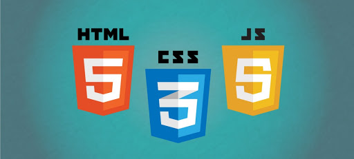

All type tutorials
Graphic Design
Graphic design is the process of visual
communication and problem-solving through the use of
typography,photography,iconography anf illustration.
The field is considered a subset of visual communica
tion and communication design,but sometimes the term"g
rahic design" is used synonymously.
"Graphic designers create and combine symbols, images and text to form visual representations of ideas and messages."